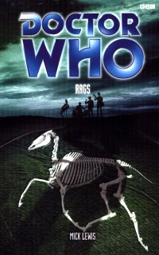

|
Rags
|
BASIC PLOT DOCTOR COMPANIONS MATERIALISATION CIRCUIT PREPARATORY READING CONTINUITY REFERENCES p. 25: Bessie makes an appearance, and it has a 'tracking sensor' (p. 27). p. 36: Ogrons, Axons, and Daleks are 'nothing compared to these freaks and villains.' p. 86: The Prime Minister is male; which could quite plausibly be a literary subversion of 'real life' anyway. p. 169: The Doctor experiences a vision where he thinks he sees Susan. Her husband, it is said, died in hospital. The Doctor's advice (enigmatically, when you consider recent events) was that you should 'never marry an alien'... p. 187: Susan, Vicki, Ian and Barbara (both with flickering torches), Zoe (naked). And a reference to the movie The Wicker Man: 'He was a wicker man offered up to the hungry gods, etc....' p. 224: Yates remembers the Keller machine, and its effects. OLD FRIENDS AND OLD ENEMIES NEW FRIENDS AND NEW ENEMIES CONTINUITY COCK-UPS PLUGGING THE HOLES [Fan-wank theorizing of how to fix continuity
cock-ups] FEATURED ALIEN RACES FEATURED LOCATIONS IN SUMMARY - Gareth Jelley |
|
 |